Avstemming i regnskap er en kritisk prosess som sikrer at regnskapsdata er nøyaktige og pålitelige. Dette innebærer å sammenligne og kontrollere regnskapsposter mot eksterne kilder og interne kontroller for å identifisere og korrigere eventuelle avvik. Avstemming er en sentral del av QA (Quality Assurance) i regnskapsføring.
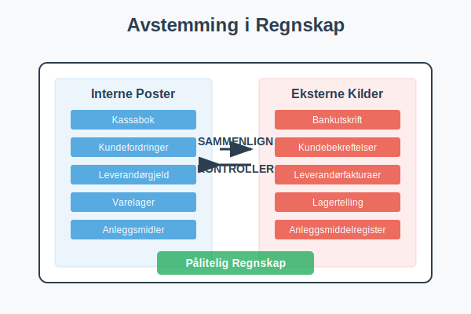
Hva er Avstemming?
Avstemming er prosessen med å kontrollere og bekrefte at regnskapsdata stemmer overens med:
- Eksterne kilder: Som bankutskrifter, leverandørfakturaer og kundebekreftelser
- Interne kontroller: Som varetelling og anleggsmiddelregistre
- Systemdata: Mellom ulike regnskapssystemer og moduler
Formålet er å sikre at regnskapet gir et rettvisende bilde av selskapets økonomiske situasjon.
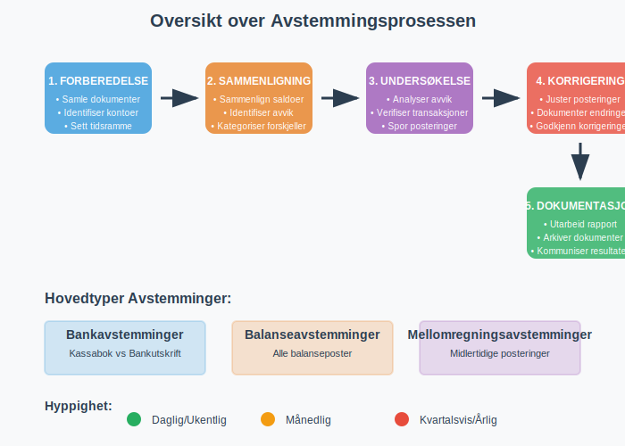
Sluttoppgjøret er den endelige fasen der alle avstemminger og justeringer bekreftes. Se nærmere på Sluttoppgjør i regnskap for en grundig gjennomgang av denne prosessen.
Typer Avstemminger
Bankavstemminger
Bankavstemminger er den vanligste formen for avstemming og innebærer å sammenligne selskapets kassabok med bankens kontoutskrift. Dette krever grundig forståelse av banktransaksjoner og deres regnskapsføring. For en detaljert guide til bankavstemming, se vår omfattende artikkel om bankavstemming.
Hovedkomponenter i Bankavstemminger:
- Innskudd i transitt: Innskudd registrert i kassaboken men ikke ennå på bankutskriften
- Utestående sjekker: Sjekker utstedt men ikke ennå innløst av banken
- Bankgebyrer: Gebyrer trukket av banken men ikke registrert i kassaboken
- Renteinntekter: Renter kreditert av banken men ikke registrert
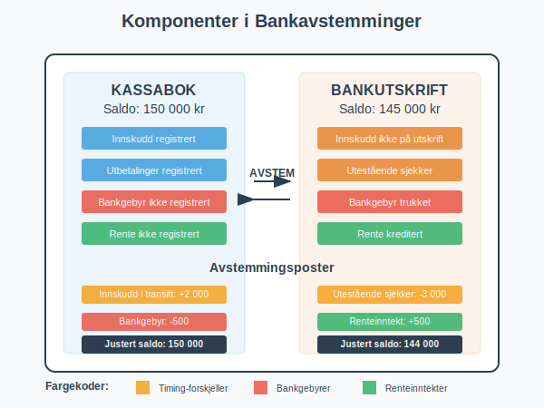
Balanseavstemminger
Balanseavstemminger sikrer at alle balanseposter er korrekt dokumentert og støttet av underliggende dokumentasjon. Saldobalansen fungerer som det grunnleggende verktøyet for å sikre at alle kontoer er riktig avstemt og at regnskapsligningen er i balanse.
Viktige Balanseposter å Avstemme:
| Balansepost | Avstemmingsmetode | Hyppighet |
|---|---|---|
| Kundefordringer | Aldersanalyse og kundebekreftelser | Månedlig |
| Leverandørgjeld | Leverandørkontoutskrifter | Månedlig |
| Varelager | Fysisk telling og verdivurdering | Kvartalsvis |
| Anleggsmidler | Anleggsmiddelregister | Årlig |
| Bankinnskudd | Bankutskrifter | Daglig/Ukentlig |
Når lageravstemminger avdekker avvik mellom bokført og fysisk beholdning, kreves systematisk lagerkorreksjon for å sikre nøyaktige regnskapsdata.
Mellomregningsavstemminger
Mellomregningskontoer krever spesiell oppmerksomhet da de ofte inneholder midlertidige posteringer som må klareres regelmessig.
Vanlige mellomregningskontoer:
- Forskuddsbetalt kostnad: Kostnader betalt på forhånd
- Påløpte kostnader: Kostnader pådratt men ikke fakturert
- Forskuddsbetaling fra kunder: Betalinger mottatt før levering
- Mva-mellomregning: Midlertidige mva-posteringer
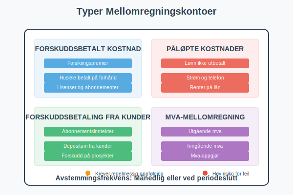
Avstemmingsprosessen
Trinn 1: Forberedelse
- Samle dokumentasjon: Bankutskrifter, fakturaer, kvitteringer
- Identifiser kontoer: Bestem hvilke kontoer som skal avstemmes
- Sett tidsramme: Definer avstemmingsperioden
Trinn 2: Sammenligning
- Sammenlign saldoer: Kontroller at regnskapssaldo stemmer med ekstern kilde
- Identifiser avvik: Noter alle forskjeller mellom kildene
- Kategoriser avvik: Klassifiser avvik etter type og årsak
Systematisk differanseanalyse og avregning av identifiserte forskjeller er essensielt for å forstå årsaker til avstemmingsdifferanser og implementere riktige korrigerende tiltak.
Trinn 3: Undersøkelse
- Analyser avvik: Finn årsaken til hver forskjell
- Verifiser transaksjoner: Kontroller underliggende dokumentasjon
- Spor posteringer: Følg transaksjoner gjennom systemet
Trinn 4: Korrigering
- Juster posteringer: Foreta nødvendige regnskapskorrigeringer
- Dokumenter endringer: Behold sporbarhet for alle justeringer
- Godkjenn korrigeringer: Sikre autorisasjon av endringer
Trinn 5: Dokumentasjon
- Utarbeid avstemmingsrapport: Dokumenter hele prosessen
- Arkiver dokumentasjon: Oppbevar for fremtidig referanse og revisjon
- Kommuniser resultater: Informer relevante interessenter
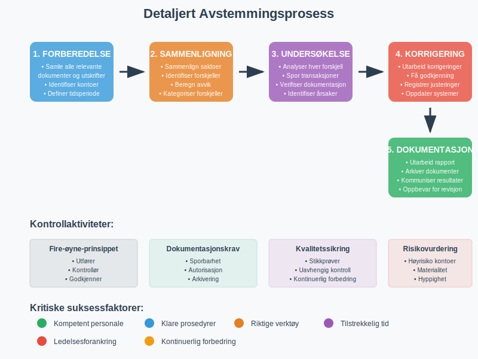
Beste Praksis for Avstemminger
Hyppighet og Timing
Daglige avstemminger:
- Bankinnskudd og kontantbeholdning - inkludert systematisk kasseoppgjør for å avstemme fysisk kassebeholdning mot registrerte transaksjoner
- Kritiske kundekontoer
- Høyvolum transaksjonskontoer
Ukentlige avstemminger:
- Leverandørgjeld
- Lønn og personalrelaterte kontoer
- Mva-kontoer
Månedlige avstemminger:
- Alle balanseposter
- Mellomregningskontoer
- Detaljerte kundefordringer
Kvartalsvise avstemminger:
- Varelager og anleggsmidler
- Komplekse finansielle instrumenter
- Konsernelimineringer
Kontrollmiljø
Fire-øyne-prinsippet
- Utfører: Person som gjennomfører avstemmingen
- Kontrollør: Uavhengig person som verifiserer arbeidet
- Godkjenner: Autorisert person som godkjenner korrigeringer
- Arkiverer: Sikrer korrekt dokumentasjon og oppbevaring
Segregering av Oppgaver
- Samme person bør ikke både registrere transaksjoner og utføre avstemminger
- Autorisasjon av korrigeringer bør skje på høyere nivå
- Tilgang til avstemmingsdokumentasjon bør kontrolleres
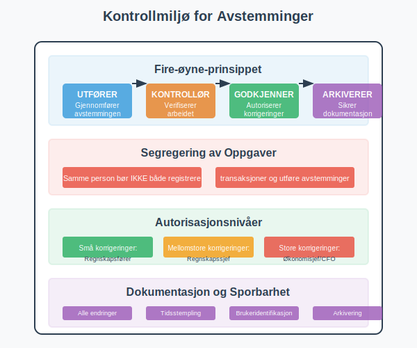
Teknologi og Automatisering
Automatiserte Avstemmingsverktøy
Moderne regnskapssystemer tilbyr automatiserte avstemmingsfunksjoner:
- Regelbasert matching: Automatisk matching basert på forhåndsdefinerte regler
- KID-nummer matching: Automatisk identifikasjon og avstemming av betalinger basert på betalingsreferanser
- Fuzzy matching: Identifisering av sannsynlige match selv med små avvik
- Maskinlæring: Kontinuerlig forbedring av matchingalgoritmer
- Integrerte bankfeeder: Direkte import av banktransaksjoner
Fordeler med Automatisering
| Fordel | Beskrivelse | Påvirkning |
|---|---|---|
| Tidsbesparelse | Reduserer manuelt arbeid | 60-80% reduksjon i tid |
| Nøyaktighet | Eliminerer menneskelige feil | 95%+ nøyaktighet |
| Konsistens | Standardiserte prosesser | Jevn kvalitet |
| Sporbarhet | Automatisk dokumentasjon | Bedre revisjonsspor |
| Skalerbarhet | Håndterer økt volum | Vekst uten proporsjonale kostnader |
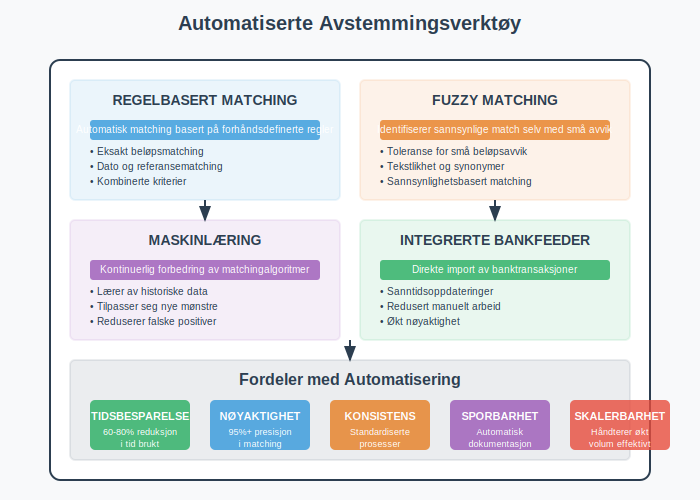
Utfordringer og Løsninger
Vanlige Utfordringer
Volumutfordringer
- Problem: Store mengder transaksjoner gjør manuell avstemming tidkrevende
- Løsning: Implementer automatiserte avstemmingsverktøy og unntak-basert rapportering
Komplekse Transaksjoner
- Problem: Sammensatte transaksjoner som er vanskelige å spore
- Løsning: Utvikle standardiserte prosedyrer og bruk spesialiserte verktøy
Tidspress
- Problem: Krav om rask måneds-/kvartalsavslutning
- Løsning: Implementer kontinuerlige avstemmingsprosesser og forbered i forkant
Datakvalitet
- Problem: Inkonsistente eller ufullstendige data
- Løsning: Etabler datakvalitetskontroller og standardiserte dataformater
Løsningsstrategier
Risikobasert Tilnærming
- Høyrisiko kontoer: Daglig eller ukentlig avstemming
- Mellomrisiko kontoer: Månedlig avstemming med stikkprøvekontroller
- Lavrisiko kontoer: Kvartalsvis eller årlig avstemming
Kontinuerlig Forbedring
- Regelmessig evaluering av avstemmingsprosesser
- Identifisering og eliminering av ineffektiviteter
- Opplæring og kompetanseutvikling av personale
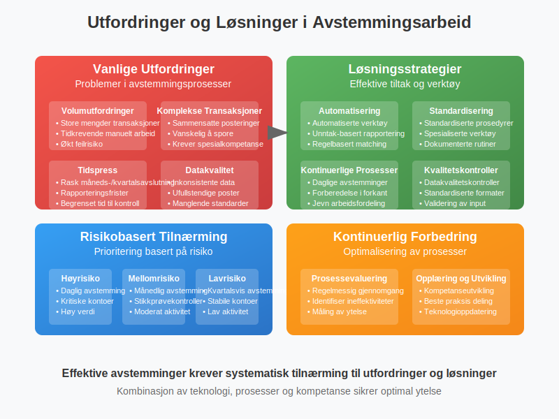
Regulatoriske Krav og Compliance
Regnskapsloven
Regnskapsloven krever at regnskapet skal gi et rettvisende bilde av selskapets økonomiske stilling. Avstemminger er essensielle for å oppfylle dette kravet.
Revisjonsstandarder
Revisorer forventer dokumenterte avstemmingsprosesser som del av intern kontroll:
- ISA 315: Forståelse av enheten og dens miljø
- ISA 330: Revisors respons på vurderte risikoer
- ISA 500: Revisjonsbevis
Bransjespesifikke Krav
Finansielle Institusjoner
- Daglige avstemminger av alle kontoer
- Regulatorisk rapportering krever høy nøyaktighet
- Spesielle krav til dokumentasjon og sporbarhet
Børsnoterte Selskaper
- Sarbanes-Oxley Act (SOX) compliance
- Krav om intern kontroll over finansiell rapportering
- Økt fokus på prosessdokumentasjon
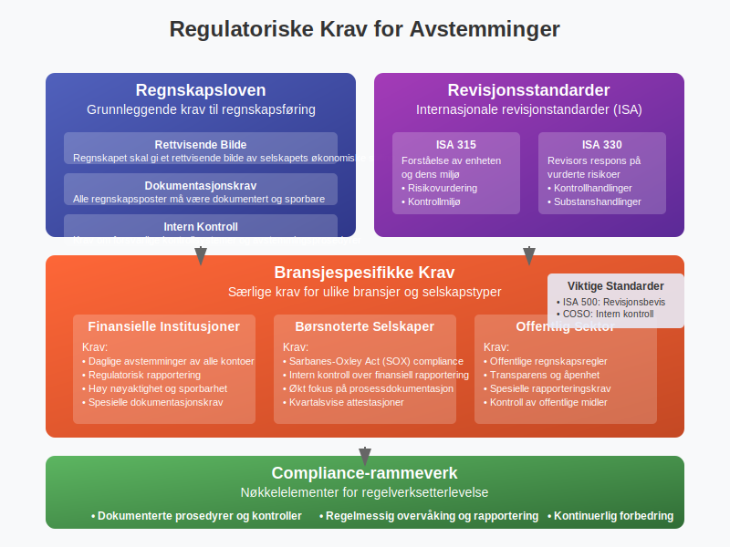
Praktiske Eksempler
Eksempel 1: Bankavstemminger
Situasjon: Selskapet har en kassabok-saldo på 150 000 kr, mens bankutskriften viser 145 000 kr.
Avstemmingsprosess:
- Identifiser forskjellen: 150 000 - 145 000 = 5 000 kr
- Analyser årsaker:
- Utestående sjekk: 3 000 kr
- Innskudd i transitt: 2 000 kr
- Bankgebyr ikke registrert: 500 kr
- Rente kreditert av bank: 500 kr
Avstemmingsoppstilling:
Kassabok-saldo: 150 000 kr
Minus: Utestående sjekker: (3 000 kr)
Plus: Innskudd i transitt: 2 000 kr
Minus: Bankgebyr: (500 kr)
Plus: Rente fra bank: 500 kr
Justert kassabok-saldo: 149 000 kr
Bank-saldo: 145 000 kr
Plus: Innskudd i transitt: 2 000 kr
Minus: Utestående sjekker: (3 000 kr)
Justert bank-saldo: 144 000 kr
Korrigeringer i kassabok:
- Registrer bankgebyr: 500 kr
- Registrer renteinntekt: 500 kr
- Ny kassabok-saldo: 150 000 - 500 + 500 = 150 000 kr
Eksempel 2: Kundefordringer
Situasjon: Avstemming av kundefordringer per 31. desember.
Prosess:
- Utskriv aldersanalyse fra regnskapssystemet
- Sammenlign med kundebekreftelser (sirkulering)
- Identifiser avvik og undersøk årsaker
- Vurder tapsavsetninger basert på alder og risiko
Aldersanalyse:
| Aldersgruppe | Beløp | Tapsavsetning % | Avsetning |
|---|---|---|---|
| 0-30 dager | 500 000 kr | 0% | 0 kr |
| 31-60 dager | 200 000 kr | 2% | 4 000 kr |
| 61-90 dager | 100 000 kr | 5% | 5 000 kr |
| Over 90 dager | 50 000 kr | 20% | 10 000 kr |
| Totalt | 850 000 kr | 19 000 kr |
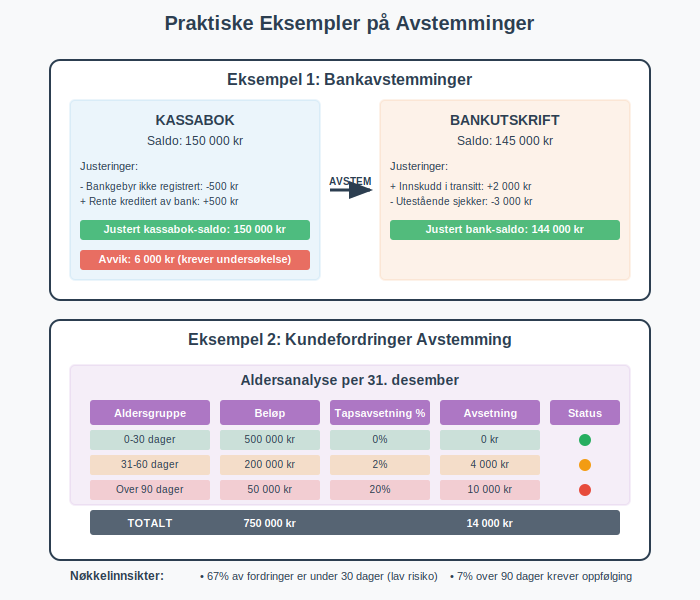
Digitalisering og Fremtiden
Kunstig Intelligens og Maskinlæring
AI-drevne avstemminger blir stadig mer sofistikerte:
- Mønstergjenkjenning: Identifiserer komplekse sammenhenger i data
- Prediktiv analyse: Forutsier potensielle avstemmingsproblemer
- Naturlig språkbehandling: Analyserer tekstbeskrivelser for bedre matching
- Kontinuerlig læring: Forbedrer nøyaktighet over tid
Blockchain og Distribuerte Systemer
- Uforanderlige poster: Reduserer behov for tradisjonelle avstemminger
- Smart contracts: Automatiserer avstemmingsprosesser
- Sanntidsvalidering: Kontinuerlig verifisering av transaksjoner
Cloud-baserte Løsninger
- Skalerbarhet: Håndterer varierende volumer effektivt
- Tilgjengelighet: 24/7 tilgang fra hvor som helst
- Integrasjon: Sømløs kobling mellom systemer
- Kostnadseffektivitet: Reduserte IT-kostnader
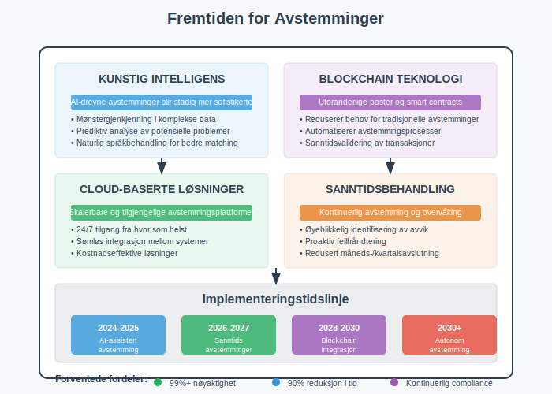
Konklusjon
Avstemming i regnskap er en fundamental prosess som sikrer pålitelighet og nøyaktighet i finansiell rapportering. Gjennom systematiske kontroller og sammenligninger bidrar avstemminger til å:
- Opprettholde dataintegritet i regnskapssystemene
- Identifisere og korrigere feil før de påvirker beslutninger
- Overholde regulatoriske krav og revisjonsstandarder
- Bygge tillit hos interessenter og investorer
Moderne teknologi gjør avstemmingsprosesser mer effektive og nøyaktige, men det grunnleggende prinsippet om kontroll og verifisering forblir uendret. Organisasjoner som investerer i robuste avstemmingsprosesser vil ha et solid fundament for pålitelig finansiell rapportering.
For å lykkes med avstemminger er det viktig å:
- Etablere klare prosedyrer og ansvarsområder
- Implementere passende teknologiske løsninger
- Sikre kompetent og opplært personale
- Opprettholde fokus på kontinuerlig forbedring
Ved å følge beste praksis og utnytte moderne verktøy kan organisasjoner transformere avstemmingsarbeid fra en tidkrevende oppgave til en verdiskapende aktivitet som styrker den finansielle kontrollen.
Avstemminger er spesielt kritiske under årsavslutning, hvor alle kontoer må være korrekt avstemt og alle avvik må være avregnet før årsregnskapet kan ferdigstilles og godkjennes.